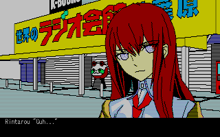

Steins;Gate 8BIT - Variant Space Octet è una visual novel non canonica rilasciata nel 2011 dalla 5pb. e ambientata in seguito agli eventi di Steins;Gate.
Grazie a questa patch italiana, non richiede il settaggio della lingua non Unicode in Giapponese.
Come giocare
Muoviti tra le strade di Akihabara, guardati intorno e parla con le persone che incontri.
Usa il telefono o chiama la tua assistente per ottenere indizi.
Scopri easter egg senza finire in GAME OVER.
Collegamenti
Clicca qui, o sul logo, per attivare o disattivare la musica.